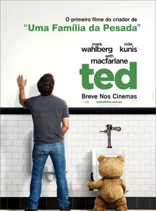

Direção:
Seth MacFarlaneElenco:
Mark Wahlberg, Mila Kunis, Seth MacFarlaneGênero:
ComédiaClassificação:
16 anosSinopse:
É Natal e o pequeno John tem apenas um pedido a fazer ao Papai Noel: que seu ursinho de pelúcia, Ted, ganhe vida. O garoto fica surpreso ao perceber que seu pedido foi atendido e logo eles se tornam grandes amigos. John e Ted crescem juntos e o urso de pelúcia se torna bastante mal humorado com a idade. Já adulto, John (Mark Wahlberg) precisa decidir entre manter a amizade de infância ou o namoro com Lori Collins (Mila Kunis).